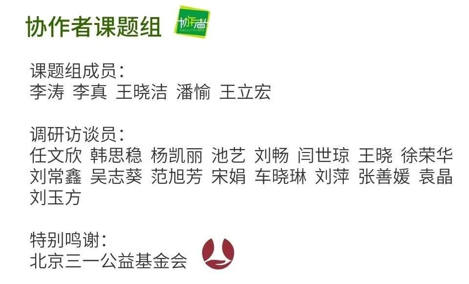

疫情下的深呼吸 | 没有收入，下个月就不知道该怎么生活了
原文链接 备份链接 本文是协作者在“农民工抗疫救援行动”中，针对困境农民工家庭开展的个案访谈之一，旨在快速识别疫情中的脆弱人群及其需求，为疫情防控和救援工作提供参考，我们整理出来与你分享。 疫情下的深呼吸 ——困境农民工家庭个案实录（七） …
本文是协作者在“农民工抗疫救援行动”中，针对困境农民工家庭开展的个案访谈之一，旨在快速识别疫情中的脆弱人群及其需求，为疫情防控和救援工作提供参考，我们整理出来与你分享。
疫情下的深呼吸
——困境农民工家庭个案实录（十一）
希望他可以成为对社会有用的人
口述者：阿珍（化名）/广东信宜籍
打工所在地：珠海
编者注：阿珍，76岁，广东信宜人。1990年以来，与老伴一同来珠海生活，儿子因借高利贷无法偿还，离家出走，至今未归，儿媳也因此改嫁。两位老人以务农为生，并照顾着上高中的孙子，偶尔有女儿支持一下，勉强维持生计。
我们这样的家庭，不知道从何说起
我来珠海31年，刚来的时候在珠海种甘蔗，后面因为各种原因没有再种甘蔗，以种菜维生，偶尔出去卖菜。现在疫情期间，摘的菜自家人吃一些，剩下的就拿到市场卖，一次卖10斤、8斤，一个星期去3-5次，现在市场很少有人，晚上卖到七点多就回家，每次能挣几十块钱，其他时间也很少出门。前几天在菜地种的矮瓜无端被别人拔了，不知道谁做的，大晚上没人看守，现在的人做事已经变得很厉害了，以前还不会有人偷，现在没想到猖狂了那么多。
听村里大队的人说，以后要把土地重新规划，我们需要租地才可以种菜了。这两年几乎没有收入，现在自己种的菜只够自己吃了……日常生活费依赖于低保补贴的几百块，还有协作者家里建图书馆每月的补贴。儿子走了，借了高利贷无法偿还，就再也联系不上，儿媳改嫁了，只剩孙子和我们相依为命。还有女儿的支持，不然也不知道怎么办。偶尔自己生病了还要女儿带着去看病，二女儿也不容易，帮别人卖早餐，一个月有1000元左右，丈夫摔断腿没有工作，一家人也只靠她自己。

▲ 协作者社会工作者去探望阿珍一家（拍摄于2016年5月）
2019年10月，我的脚和腰发炎很严重，女儿带我去拿药吃，现在药基本就吃完了，还没有钱继续去复诊。最近丈夫的脚总是疼，加上疫情的影响，也没有去工作过，没有做工就没有收入，医生说也不能让他干重活。我只能到附近看看有没有山草药可以采摘回去给他擦下。现在比较担心我年龄越来越大了，行动不太方便，身体不行种不了地。外来务工人员延迟复工，出去卖菜也没有人买，也挣不了钱。年后女儿都没有来探望我们，（由于疫情）他们也没办法去工作，只有三女儿开始上班，工作主要是帮别人打扫卫生，但是收入也不够支持他们自己的家庭……
也不知道怎么说需要什么支持了，现在我们这样的家庭，不知道从何说起。
希望以后他可以考上大学，成为对社会有用的人
孙子从小是我和他爷爷俩人带大的。
孙子比较消瘦，回家吃饭比较少，觉得家里饭菜不够好吃，学校饭菜选择更多。他生活也比较节俭，学校吃饭也是吃最便宜的。他最近也有感冒流鼻涕，也没有看医生，只是自己吃点药。
孙子下学期就高三了，他也很无奈，想上学也不可以去。他们学校2月17日开始上网课，我用的按键机，孙子有个很旧的智能机可以勉强用用，连的是旁边邻居家的网络，我们家里也没有网。听孙子说新来的班主任在学校教数学，是湖北的人，因为疫情估计之后也没办法来给他们上课。

▲ 附近的小朋友来阿珍孙子运营的社区自助图书馆看书
不知道孙子学习具体怎样，他也不说，有时候说了我也不懂。但是看到他能主动学习，自觉完成作业，希望以后他可以考上大学，成为对社会有用的人。但我比较担心高考需要复习，疫情延迟开学会不会耽误孙子的学业。开学需要交800元左右的学费，伙食费500元一个月，之后也需要交。这些，都还没有着落。
怕也没有用，该怎么样就怎样
孙子放假回家告诉我新冠肺炎的事情，我才知道这件事情。很久以前有存放了口罩，家里没有消毒液，也没有买。开始都没有怎么重视起来，也都不怎么出去，就没有戴口罩防护。前几天村委给一次性医用口罩，还有你们协作者发了几个N95可以重复使用的。现在用的时候我会贴一张纸在口罩里面，出去一下就用一下。出去卖菜，在市场外面留意到有两个小女孩，把消毒水喷口罩和手，看到其他人也这样，后面也是在你们的提醒下，才知道要放在通风的地方。自己后面也会留意。
目前对于新冠肺炎没有很怕，怕也是没有用，该怎么样就怎样，一切信命，自己也不懂。但就是现在出去不方便，拿点钱（银行取钱）又不方便。本来打算让孙子出门把低保证的钱拿出来，用于日常开支，饮食，不拿出来担心之后要用，基本生活开支，孙子还要交学费。银行还不知道什么时候开门，去了好几次，都是白跑一趟，现在也拿不到钱。
社会工作者手记
谈吐间能感受到坚强的奶奶，因为年龄和疾病而逐渐变得无能为力，总是信奉命运的主宰，走一步是一步。突发的疫情更是让她担心老伴的身体、女儿一家的生活、孙子的学习……但是奶奶总是带着希望与愉悦，她希望孙子能够努力学习，成为社会上有用的人。这份希望伴随着她，努力、积极、向上的生活。
服务建议
当下：
1.协调救助资源，提供紧急生计救助；
2.为家庭成员提供个性化的防疫知识指导和培训，链接必需的防护用品，确保家庭成员生活保障；
3.疫情期间，邀请孩子参与在线课业辅导学习小组，提升自觉学习与他人交流的能力，缓解家中老人心理压力。
长远:
1.邀请孩子继续参与协作者公益服务，提升领导力、抗逆力等多方面的能力；
2.为孩子提供高考辅导，包括课业复习、考试技巧、报考志愿等；
3.链接医学志愿者和救助资源，为家庭成员提供健康、就医、体检等基本支持性服务。
（更多个案故事与个案报告见微信公众号“协作者云社工”，转载请在公众号后台留言与协作者联系。）
**

感谢每一位协作者之友。在这个非常时期，即使人与人之间必须要保持距离，总还有生命的希望和力量迸发在我们心间。谢谢有你们！
支持协作者，
你可以加入协作者之友，成为协作者月捐人

查阅往期链接，了解更多协作者抗击疫情信息：
疫情下的深呼吸|新冠肺炎疫情中困境农民工家庭需求分析报告（摘要）
协作者致打工朋友的一封信（二）| 疫情期间，如何面对返城务工

协作者云社工

长按二维码，识别关注协作者云社工
说明：“协作者云社工”微信公众号发布内容，除特别说明外，均为原创，使用文中内容请注明出处及作者，否则将追究相关责任。
看都看完了，不如点击右下角“在看”试试

原文链接 备份链接 本文是协作者在“农民工抗疫救援行动”中，针对困境农民工家庭开展的个案访谈之一，旨在快速识别疫情中的脆弱人群及其需求，为疫情防控和救援工作提供参考，我们整理出来与你分享。 疫情下的深呼吸 ——困境农民工家庭个案实录（七） …
原文链接 备份链接 本文是协作者在“农民工抗疫救援行动”中，针对困境农民工家庭开展的个案访谈之一，旨在快速识别疫情中的脆弱人群及其需求，为疫情防控和救援工作提供参考，我们整理出来与你分享。 疫情下的深呼吸 ——困境农民工家庭个案实录（五） …
原文链接 备份链接 本文是协作者在“农民工抗疫救援行动”中，针对困境农民工家庭开展的个案访谈之一，旨在快速识别疫情中的脆弱人群及其需求，为疫情防控和救援工作提供参考，我们整理出来与你分享。 疫情下的深呼吸 ——困境农民工家庭个案实录（八） …
原文链接 备份链接 本文是协作者在“农民工抗疫救援行动”中，针对困境农民工家庭开展的个案访谈之一，旨在快速识别疫情中的脆弱人群及其需求，为疫情防控和救援工作提供参考，我们整理出来与你分享。 疫情下的深呼吸 ——困境农民工家庭个案实录（九） …
原文链接 备份链接 本文是协作者在“农民工抗疫救援行动”中，针对困境农民工家庭开展的个案访谈之一，旨在快速识别疫情中的脆弱人群及其需求，为疫情防控和救援工作提供参考，我们整理出来与你分享。 疫情下的深呼吸 ——困境农民工家庭个案实录（之 …